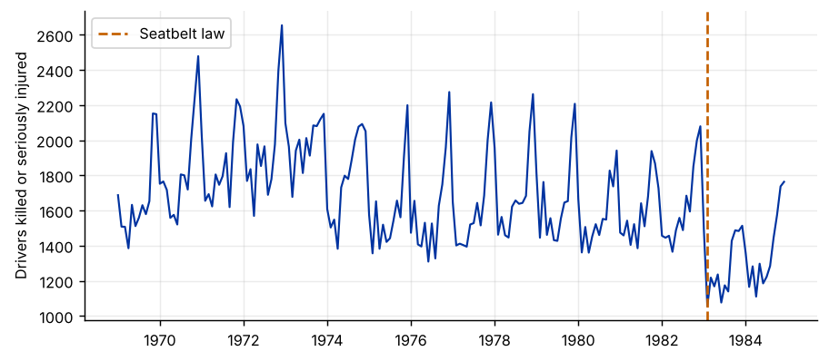
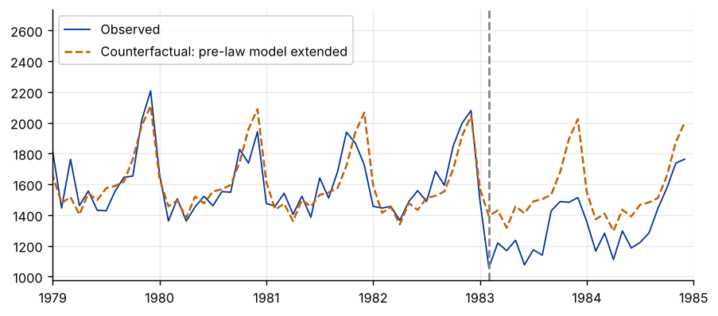

Step 1The question and the design
On 31 January 1983 wearing a front seatbelt became compulsory in Great Britain. How many deaths and serious injuries of car drivers did the law prevent? The law applied to the whole country at once, so there is no untreated region to compare with. This is the classic dataset of Harvey and Durbin (1986).
The interrupted time series (ITS) design uses the pre-law path of the series as the counterfactual, through a segmented regression:
| Term | Meaning |
|---|---|
| \(\beta_1\) | Pre-law trend per month |
| \(D_t\) | 1 from February 1983 onwards |
| \(\delta\) | Level change: the immediate effect of the law |
| \(\gamma\) | Slope change: how the trend changed after the law |
| \(\mu_m\) | Month effects: road deaths are seasonal |
The identifying assumption
Without the law, the series would have continued along its pre-law trend and seasonal pattern. Nothing else that affects road deaths may change at the same time. This is a strong assumption, and the credibility of an ITS study rests on arguing it: listing other events (fuel prices, speed limits, recessions) and showing they did not coincide with the intervention.
How to write it: design
Because the seatbelt law applied nationwide from February 1983, no contemporaneous control group exists. We estimate its effect with an interrupted time series design: a segmented regression of monthly driver casualties on a linear trend, month effects, and a level and a slope change at the date the law took effect, with Newey–West standard errors to allow for serial correlation.
Step 2Load the data and look at the series
import pandas as pd
import numpy as np
import matplotlib.pyplot as plt
import statsmodels.api as sm
df = pd.read_csv("seatbelt.csv")
df["month"] = (np.round((df["time"] % 1) * 12).astype(int) % 12) + 1
df["t"] = np.arange(len(df))
T0 = int(df.index[df["law"] == 1][0])
print(f"{len(df)} months from {df['time'].iloc[0]:.0f} to {df['time'].iloc[-1]:.2f}; law from observation {T0} (February 1983)")
print(f"Mean deaths before the law: {df.loc[:T0 - 1, 'deaths'].mean():.0f} after: {df.loc[T0:, 'deaths'].mean():.0f}")
fig, ax = plt.subplots()
ax.plot(df["time"], df["deaths"], lw=1.2)
ax.axvline(df["time"].iloc[T0], color="#c46000", ls="--", label="Seatbelt law")
ax.set_ylabel("Drivers killed or seriously injured"); ax.legend()192 months from 1969 to 1984.92; law from observation 169 (February 1983) Mean deaths before the law: 1718 after: 1322

How to read it
The series has a strong seasonal pattern (more casualties in winter), a gently falling trend, and a visible drop in early 1983. There is also a fall around 1974, the time of the first oil crisis, when fuel prices jumped and a national speed limit was introduced. Keep it in mind: it is exactly the kind of event that can masquerade as, or contaminate, a policy effect.
Step 3Estimate the segmented regression
df["post"] = (df["t"] >= T0).astype(int)
df["t_post"] = (df["t"] - T0) * df["post"]
X = pd.get_dummies(df["month"], prefix="m", drop_first=True, dtype=float)
X = sm.add_constant(pd.concat([df[["t", "post", "t_post"]], X], axis=1))
lags = int(np.floor(4 * (len(df) / 100) ** (2 / 9))) + 1
its = sm.OLS(df["deaths"], X).fit(cov_type="HAC", cov_kwds={"maxlags": lags})
print(its.summary2().tables[1].loc[["const", "t", "post", "t_post"]].round(3))
print(f"\nLevel change as a share of the pre-law mean: {its.params['post'] / df.loc[:T0 - 1, 'deaths'].mean():.1%}")Coef. Std.Err. z P>|z| [0.025 0.975] const 1872.062 65.584 28.544 0.000 1743.519 2000.605 t -1.778 0.409 -4.352 0.000 -2.579 -0.978 post -300.666 41.289 -7.282 0.000 -381.591 -219.741 t_post 6.871 2.125 3.234 0.001 2.707 11.036 Level change as a share of the pre-law mean: -17.5%
How to read it
- Level change (
post). In the month the law took effect, driver casualties fell by about 300, roughly 17% of the pre-law monthly average. The effect is large and highly significant. - Slope change (
t_post). Positive: after the immediate drop, the series fell less steeply than before. With only 23 post-law months, this slope is estimated imprecisely, and it should not be extrapolated far. - Standard errors are Newey–West with a few lags, which keeps inference valid when monthly errors are serially correlated.
Step 4The counterfactual
pre_fit = sm.OLS(df.loc[:T0 - 1, "deaths"], X.loc[:T0 - 1, [c for c in X.columns if c not in ("post", "t_post")]]).fit()
cf = pre_fit.predict(X[[c for c in X.columns if c not in ("post", "t_post")]])
fig, ax = plt.subplots()
ax.plot(df["time"], df["deaths"], lw=1, label="Observed")
ax.plot(df["time"], cf, lw=1.4, ls="--", label="Counterfactual: pre-law model extended")
ax.axvline(df["time"].iloc[T0], color="grey", ls="--"); ax.set_xlim(1979, 1985); ax.legend()
print(f"Average monthly gap after the law: {(df['deaths'] - cf)[T0:].mean():.0f}")
print(f"Total over {len(df) - T0} months: {(df['deaths'] - cf)[T0:].sum():,.0f}")Average monthly gap after the law: -225 Total over 23 months: -5,166

How to read it
The dashed line extends the pre-law trend and seasonal pattern into the post-law period: what the model says would have happened without the law. The observed series lies well below it after February 1983. Summed over the post-law months, this is several thousand fewer drivers killed or seriously injured, the number a policy reader wants.
Step 5Diagnostics: autocorrelation
from statsmodels.stats.diagnostic import acorr_ljungbox
from statsmodels.stats.stattools import durbin_watson
resid = its.resid
print(f"Durbin-Watson: {durbin_watson(resid):.2f}")
print(acorr_ljungbox(resid, lags=[1, 6, 12]).round(4))
# the same model with AR(1) errors, estimated by iterated feasible GLS (Cochrane-Orcutt)
ar = sm.GLSAR(df["deaths"], X, rho=1).iterative_fit(maxiter=20)
print(f"\nWith AR(1) errors: level change = {ar.params['post']:.1f} (s.e. {ar.bse['post']:.1f}), AR coefficient = {ar.model.rho[0]:.2f}")Durbin-Watson: 0.93
lb_stat lb_pvalue
1 54.9953 0.0
6 164.8760 0.0
12 220.0125 0.0
With AR(1) errors: level change = -277.7 (s.e. 98.5), AR coefficient = 0.53How to read it
The Durbin–Watson statistic below 2 and the Ljung–Box tests show positive serial correlation in the residuals: a bad month tends to be followed by another. The Newey–West errors already allow for this. Modelling the autocorrelation directly, with AR(1) errors, is the standard robustness check. The level change remains large and significant.
Step 6Placebo dates
pre = df.iloc[:T0].copy()
for label, at in (("January 1976", int(np.argmin(np.abs(pre["time"] - 1976.0)))), ("May 1978", int(np.argmin(np.abs(pre["time"] - 1978.33))))):
p = pre.assign(fake=(pre["t"] >= at).astype(int), t_fake=(pre["t"] - at) * (pre["t"] >= at))
Xp = sm.add_constant(pd.concat([p[["t", "fake", "t_fake"]], pd.get_dummies(p["month"], prefix="m", drop_first=True, dtype=float)], axis=1))
r = sm.OLS(p["deaths"], Xp).fit(cov_type="HAC", cov_kwds={"maxlags": lags})
print(f"Placebo law in {label}: level change = {r.params['fake']:7.1f} (s.e. {r.bse['fake']:.1f}), p-value = {r.pvalues['fake']:.3f}")Placebo law in January 1976: level change = -153.6 (s.e. 90.0), p-value = 0.088 Placebo law in May 1978: level change = 15.1 (s.e. 57.5), p-value = 0.792
How to read it
A placebo date is a date when nothing happened. Estimated on pre-law data only, it should show no effect.
- May 1978: no significant effect, as it should be.
- January 1976: a large negative “effect” of about −150, significant at the 10% level. This is not a failure of the method: it picks up the 1974–75 oil-crisis fall in the data, which a single linear trend cannot capture. It shows that this series has other breaks, and that the trend before 1983 is not as simple as the model assumes.
Report both placebos. The case for the seatbelt effect rests on the size and sharpness of the 1983 drop, which no other event matches, and Harvey and Durbin strengthened it by modelling fuel prices and traffic volume and by comparing with rear-seat passengers, who were not covered by the law. When a comparison series exists, use it.
Step 7Write the paper
How to write it: results
The segmented regression indicates an immediate reduction of about 300 drivers killed or seriously injured per month when the seatbelt law took effect, around 17 percent of the pre-law average (Newey–West standard errors). The estimate is robust to modelling the residual autocorrelation with AR(1) errors. A placebo intervention in 1978 shows no effect; a placebo in 1976 shows a sizeable decline, significant at the 10 percent level, reflecting the fall associated with the 1974 oil crisis, which underlines that the attribution of the 1983 drop to the law rests on the absence of other changes at that date.
Common mistakes
- Ignoring seasonality: a policy that starts in a low season looks effective.
- Using conventional standard errors with autocorrelated monthly data.
- Extrapolating the pre-trend far beyond the intervention, or over-interpreting a slope change estimated from few post-periods.
- Not checking for other events at the same date. ITS has no comparison group to absorb them.
- When a comparison series exists (an unaffected group, region or outcome), use it: that turns the ITS into a comparative ITS or a DiD.